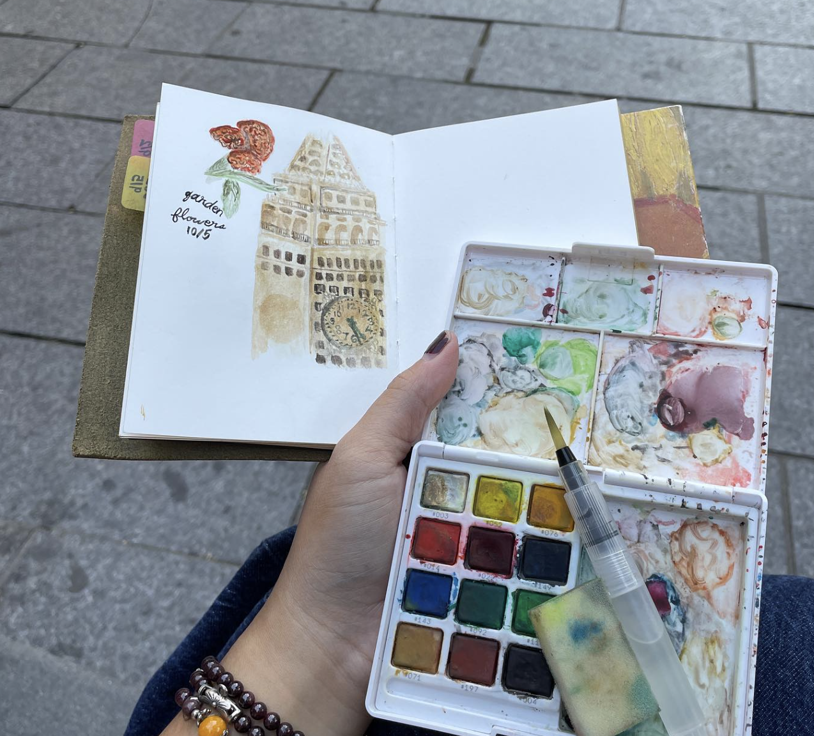
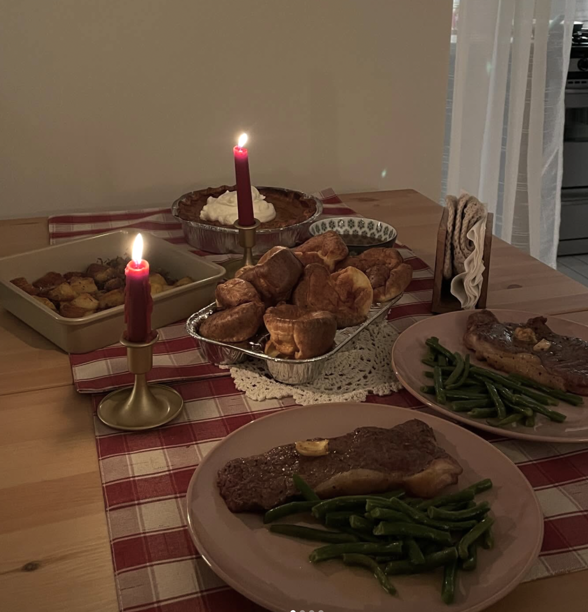
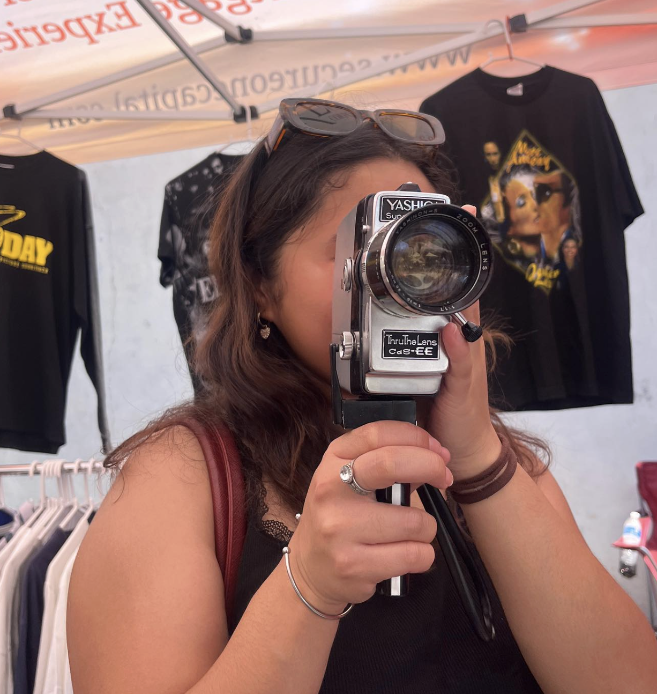
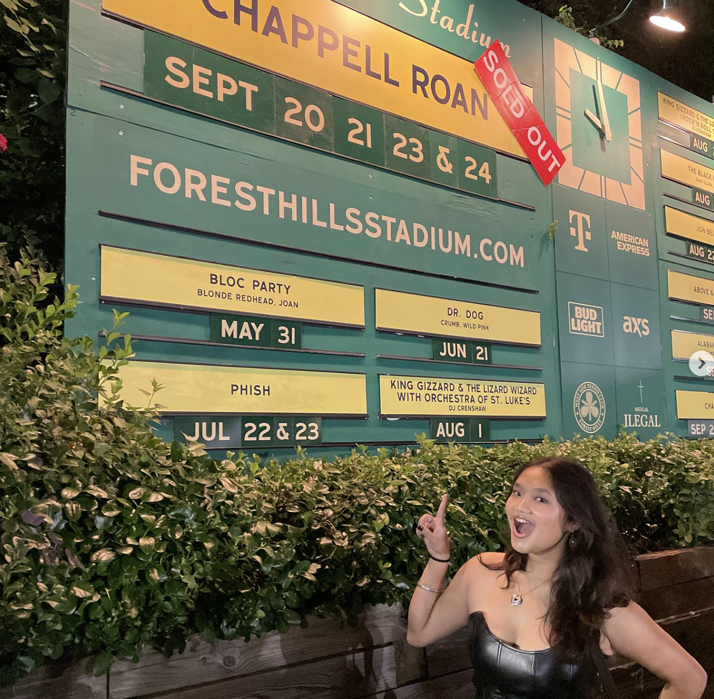
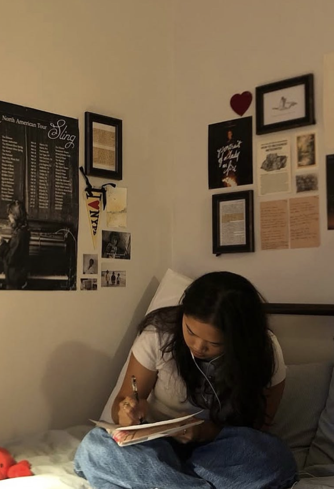
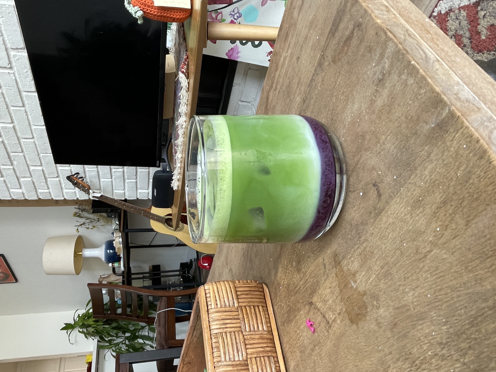

01.
What I do for fun
← DRAG TO EXPLORE →







Hi! I'm Tiffany — a data scientist, researcher, and builder who loves finding the story hiding in messy data. I'm currently pursuing my Master's at Columbia, where I split my time between machine learning coursework and figuring out how AI can actually make people's lives better.
I've worked across industries — from insurance actuarial tech in Jakarta to AI at an LA ad-tech company to public health research that made it to The New Yorker. I love working at the intersection of technical rigor and real human impact.
When I'm not wrangling data, I'm probably playing guitar, painting watercolors, making Letterboxd reviews no one asked for, or perfecting an iced matcha.
← DRAG TO EXPLORE →